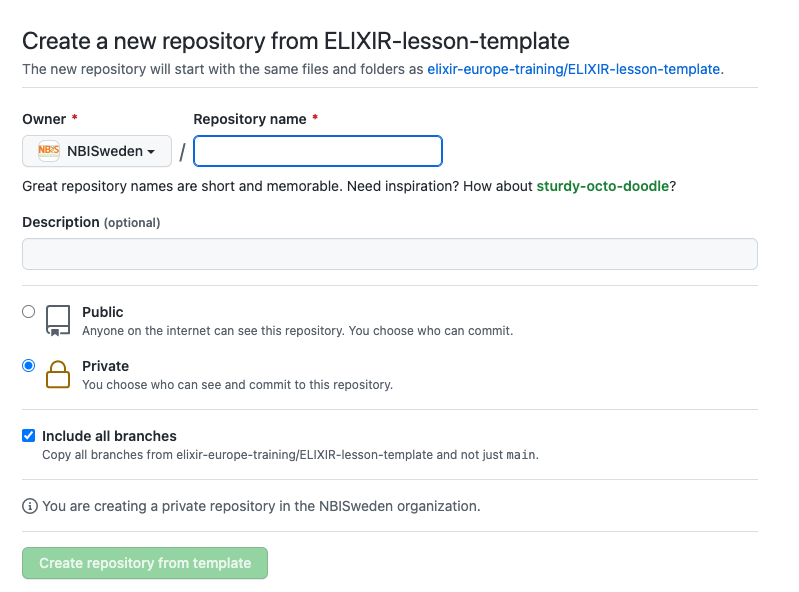
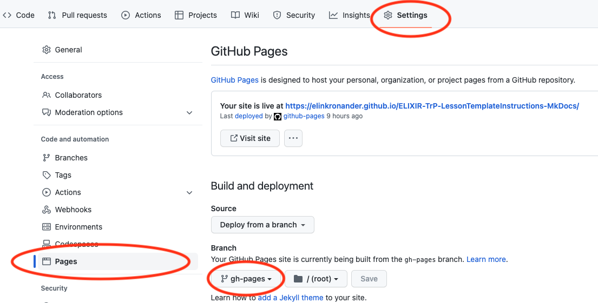
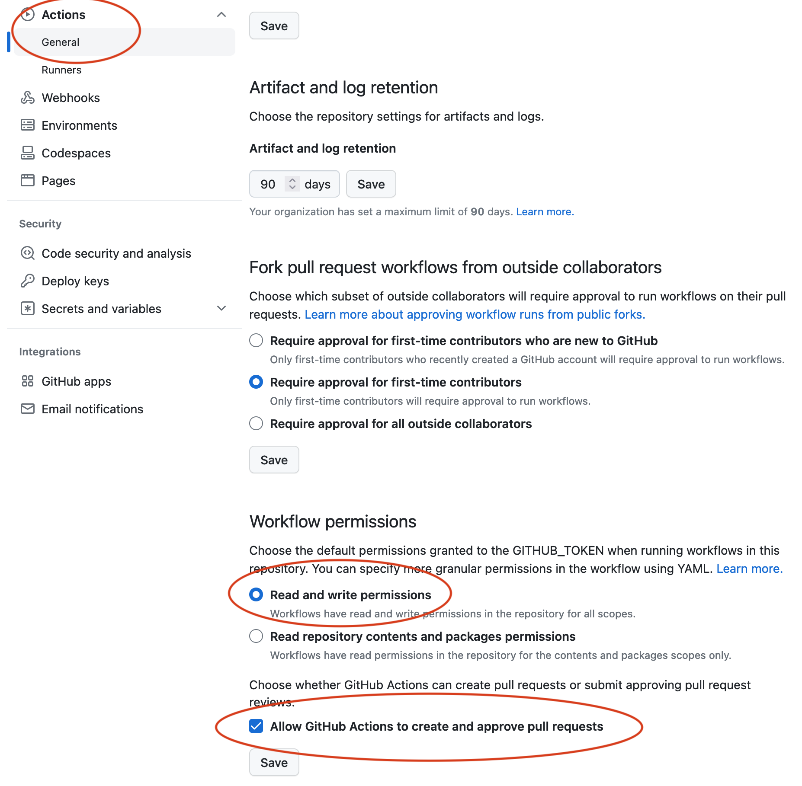
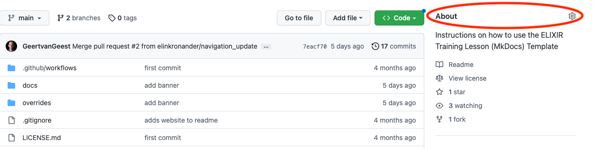
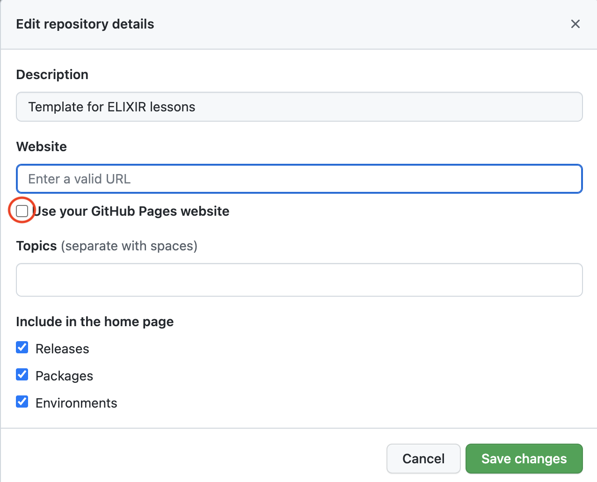

How to set up a new repository based on the ELIXIR-TrP-LessonTemplate-MkDocs”
1.1 Creating a new repository
**Go to https://github.com/elixir-europe-training/ELIXIR-TrP-LessonTemplate-MkDocs, then: **
1. Click the green Use this template button to the top right.
In the pop-up window:
- Choose an organisation where the repository will be hosted
- Enter a name for the new repository (keep in mind that this will be part of the URL)
- Decide if the repository should be Public (most likely) or Private
- Make sure to tick
Include all branches - Click
Create repository from template

2. Add collaborators
Go to settings and select Collaborators and teams under Access in the left side menu
- Click one of the green buttons
add peopleoradd teams - Select a person or a team to invite
- Selet the appropriate role
- Click
add user to this repository
3. Update the README.md
- Go to the
<> Codetab and click the README.md file - Add information about the new ELIXIR Lesson.
1.2 Using github actions to deploy gh-pages
1. Go to settings and select pages in the left side menu

- click on
Noneunder Branch and select thegh-pagesbranch - press
Save
When the site is deployed, it will take a few minutes, a box on top will display the url to the live site.
2. Go to settings and select Actions -> General in the left side menu

- at the top under
Actions permissionscheck the option “Allow all actions and reusable workflows” - scroll down to
Workflow permissionsand check the options “Read and Write permissions” + “Allow GitHub Actions to create and approve pull requests”
3. Add URL to About section of the repository
- Go to the
<> Codetab and click theAboutsettings wheel on the right side
- In the pop-up
Edit repository details:- tick the
Use your GitHub Pages websiteto automatically fill the Website URL
- press
Save changes
- tick the
4. Update site name, repository name and url in the mkdocs.yml file
- Go to the
<> Codetab and edit the mkdocs.yml file - Update the
site_nametag at the top of the file to the name of your lesson. - Update the Repository section with the respective
repo_nameandrepo_urlof the lesson you have just created.